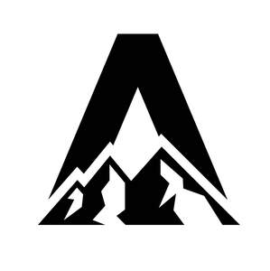

Trade Mark Journal No.2025/045 7 November 2025
UK00004226834 30 June 2025 (25,41)

- Class 25
- Gym shorts; Gym boots; Gym suits; Yoga shoes; Jogging pants; Boxing shoes; Jogging shoes; Jogging outfits; Yoga pants; Yoga shirts; Exercise wear; Boxing shorts; Gymnastic shoes; Gymwear; Tennis sweatbands; Clothes for sport; Clothes for sports; Yoga socks; Clothing for gymnastics; Trainers; Athletic clothing; Athletic footwear; Clothing for sports; Sports clothing; Athletic shoes; Athletic uniforms; Clothing; Jackets being sports clothing; Triathlon clothing; Sports garments; Athletics footwear; Sports clothing [other than golf gloves]; Athletic tights; Jerseys [clothing]; Shorts [clothing]; Clothing for wear in wrestling games; Clothing for skiing; Men's clothing; Headbands [clothing]; Headbands for clothing; Ready-to-wear clothing; Parts of clothing, footwear and headgear; Clothing for leisure wear; Clothing for cycling; Padded shirts for athletic use; Woolen clothing; Footwear for sports; Sports footwear; Dance clothing; Leisure clothing; Casual clothing; Articles of sports clothing; Jackets [clothing]; Clothing for wear in judo practices; Athletics shoes; Knitwear [clothing]; Water-resistant clothing; Gabardines [clothing]; Leather clothing; Clothing of leather; Leather (Clothing of -); Bodies [clothing]; Smart clothing; Gloves [clothing]; Gloves as clothing; Windproof clothing; Jogging bottoms [clothing]; Golf clothing, other than gloves; Wristbands [clothing]; Sports shoes; Visors [clothing]; Garments for protecting clothing; Sportswear; Trunks being clothing; Footwear for sport; Footwear for use in sport; Denims [clothing]; Weatherproof clothing; Fishing clothing; Bottoms [clothing]; Infant clothing; Maternity clothing; Waterproof clothing; Jogging sets [clothing]; Gloves for apparel; Ties [clothing]; Clothing for children; Clothing for cyclists; Sports shirts; Moisture-wicking sports shirts.
- Class 41
- Gym activity classes; Exercise and fitness classes; Sports and fitness; Gymnasium club services; Providing obstacle course training gym facilities; Exercise [fitness] training services; Fitness and exercise training services; Fitness club services; Fitness and exercise instruction; Training in yoga; Aerobic and dance facilities; Providing fitness and exercise facilities; Health and fitness training; Exercise classes; Personal trainer services [fitness training]; Training of swimming teachers; Conducting physical fitness conditioning classes; Aerobics training services; Tuition in physical fitness; Aerobics competitions; Gymnasiums; Physical fitness tuition; Rental of sports or exercise equipment; Golf fitness instruction; Sports and fitness services; Fitness training services; Health and fitness club services; Health club [fitness] services; Physical fitness training services; Conducting fitness classes; Health club services [exercise]; Physical fitness centres; Health club services [health and fitness training]; Sports training; Training in sports; Gymnasium services; Provision of health club [physical exercise] facilities; Physical fitness consultation; Physical fitness instruction; Gymnasium services relating to weight training; Exercise [fitness] advisory services; Training of sports teachers; Conducting training sessions on physical fitness online; Personal fitness training services; Physical fitness centre services; Pilates instruction; Providing health club and gymnasium services; Booking of exercise facilities.
Apres London Limited